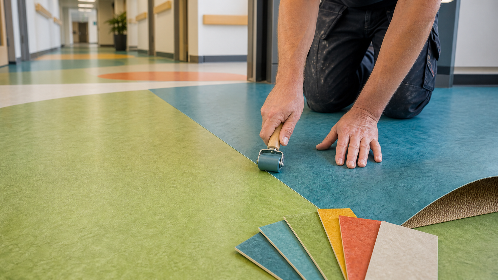
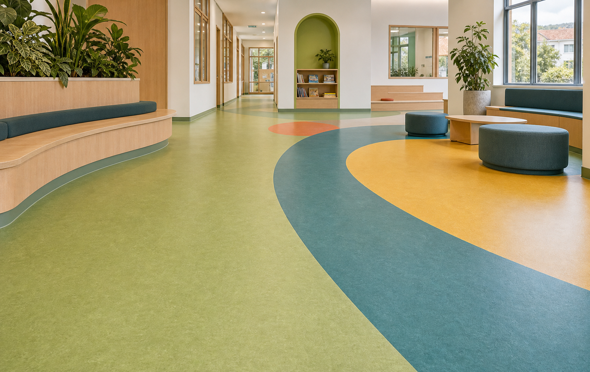

Marmoleum installation
Commercial sheet Marmoleum and linoleum flooring installation for colourful, hard-wearing interiors.
Auckland commercial flooring installation
Bright, durable and sustainable flooring for schools, healthcare, offices, retail and hospitality.
Marmoleum Specialists
We focus on Marmoleum and commercial resilient flooring installation across Auckland. The work is practical and detail-heavy: subfloor checks, set-out, adhesive selection, sheet handling, seams, edges, coved skirtings and clean handover.
If your project needs a bright sustainable floor for a school, clinic, office, shop, hospitality venue or public building, talk directly with Nick before the install window is locked in.
Careful set-out, rolling, trimming and seam planning for colourful commercial linoleum floors.
Flatness, moisture, surface condition and levelling requirements checked before installation.
Clear conversations around drawings, product choice, programme, access and finish details.
Services
Commercial sheet Marmoleum and linoleum flooring installation for colourful, hard-wearing interiors.
Vinyl sheet and resilient flooring installation for offices, retail, hospitality and public spaces.
Bright, cleanable floors for classrooms, libraries, corridors, learning commons and staff areas.
Practical resilient flooring details for treatment rooms, corridors, receptions and waiting areas.
Installation planning for welded seams, coved skirting, transitions, edges and high-use junctions.
Advice on levelling, moisture, smoothness and timing so the finished floor performs properly.
For Architects and Project Managers

The search opportunity is split: specifiers look for Marmoleum and linoleum product knowledge, while building owners often search for commercial vinyl flooring installation. This site now targets both without hiding the Marmoleum specialty.
Discuss a specified floor
Marmoleum works best when the installer is involved early enough to protect the design intent: colour layout, joins, transitions, coving, subfloor readiness and programme all affect the final result.
Bring Nick into the projectSustainable Flooring Theme
Marmoleum is known as a durable, sustainable linoleum floor covering made largely from natural raw materials such as linseed oil, wood flour, limestone, resin and jute. That makes it a strong fit for projects where designers want colour, warmth and a more natural material story than standard vinyl.
We do not sell greenwashing. The job is to install the specified floor correctly, reduce rework risk and leave a clean commercial finish that supports the sustainable design intent.
Good for architects and clients asking for resilient flooring with a sustainability angle.
Useful for education, healthcare, public spaces and fit-outs where colour helps define zones.
The best product can still fail if moisture, levelling, seams and edges are not handled properly.
Contact